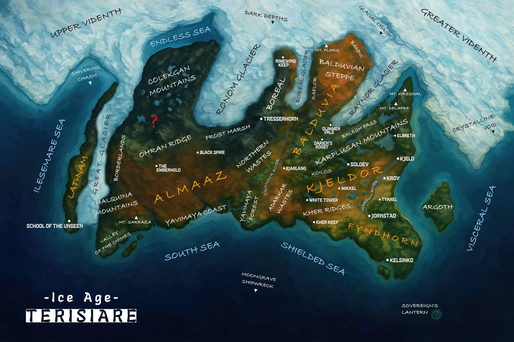

Geography
This is your campaign atlas: a high-level view of Terisiare in the Ice Age era — where the cold is endless, the roads are worse, and every shortcut has teeth.
The Frozen Continent
Use the map below to anchor lands, towns, outposts, journeys, dungeons, expeditions, and rumors. It’s meant to feel like something you’d unroll beside a campfire — and then immediately regret because the wind exists.
